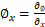
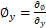
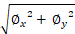
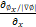
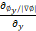
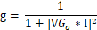

BodyAssessment
基于深度学习的产后妇女形体评估系统
图像预处理
滤波
采用双边滤波平滑人体内部
水平集
1、Localizing Region-Based Active Contours
2022-03-12 —— 2022-04-09
-
代码流程：
-
初始化轮廓为一个包含人体的矩形，内部为+c，外部为-c。（c=2）
-
开始演化
-
计算狄拉克函数
作用是表明轮廓曲线周围的区域

从上到下依次是：边界，远离边界的区域，和边界附近的区域
-
计算曲率
一阶导： ,  || = 
先对一阶导数单位化，再求二阶导数
曲率curvature =  + 
即

-
计算前景与背景均值
-
先计算Heaviside函数，标识水平集的内部和外部（内部为1，外部为0，边界为0~1）

-
计算前景均值

-
计算背景均值

-
-
计算惩罚项

将phi与一个拉普拉斯算子做卷积运算，以突出phi的边缘

-
更新phi的每个点的值

-
-
-
实验：
-
参数


c为水平集内部点的初值

-
结果
-


左图为最终的轮廓，右图为最终的水平集phi可以看到都没有平滑，调整迭代次数，时间步长，λ，μ，ν，都没有明显的效果（220326周报-全局调参）。
220402—统计时间（microseconds），尝试初始轮廓换成椭圆
| 方法 患者ID | 矩形水平集20轮 | 椭圆水平集30轮 | 椭圆水平集 20轮 |
|---|---|---|---|
| 1 | 409061 | 632310 | 396968 |
| 2 | 410979 | 592415 | 359038 |
| 3 | 415397 | 575459 | 360009 |
| 4 | 414089 | 596375 | 356047 |
| 5 | 399128 | 566481 | 358014 |
| 6 | 391003 | 560502 | 363057 |
| 7 | 385457 | 585406 | 363056 |
| 8 | 403885 | 561497 | 355049 |
| 9 | 389965 | 547533 | 370980 |
| 10 | 385965 | 527591 | 355050 |
| 11 | 389469 | 508668 | 358071 |
| 12 | 396982 | 501630 | 363055 |
| 13 | 395966 | 496705 | 365023 |
| 14 | 395943 | 505646 | 361034 |
| 15 | 389438 | 502631 | 351089 |
| 16 | 400473 | 497695 | 349039 |
| 17 | 391429 | 516645 | 358040 |
| 18 | 381009 | 503682 | 361034 |
| 19 | 429991 | 506644 | 354081 |
| 均值 | 398717.3158 | 541342.8947 | 360933.3684 |
考虑到初始轮廓也可能会影响水平集方法的效果，所以尝试了用椭圆作为初始轮廓
水平集方法按照初步调参后效果比较好的参数进行时间统计
矩形：迭代20次，演化步长m_timestep为0.01，m_lambda=0.01，m_mu=1.0. m_nu=1.0
椭圆：迭代30次，演化步长m_timestep为0.01，m_lambda=0.01，m_mu=1.0. m_nu=1.0
都没有明显的平滑效果。
2、Distance Regularized Level Set Evolution and Its Application to Image Segmentation DRLSE
2022-04-09 —— 2022-05-14
-
代码流程
-
深度图转换成灰度图

low和high分别为深度值的最小和最大值
-
去除srcImg中灰度大于100的部分，以去除相对人体较亮的背景

-
求edge indicator g
先对srcImg进行高斯滤波得到gbImg
对gbImg求梯度dx,dy,得到

计算g

目标边界的g值通常比其他区域要小
-
初始化轮廓为人体内部的两个矩形
-
开始演化
-
-
实验
- 参数
- 结果
3、Fast Global Minimization of the Active Contour/Snake Model GMAC
2022-05-14 —— 2022-05-28